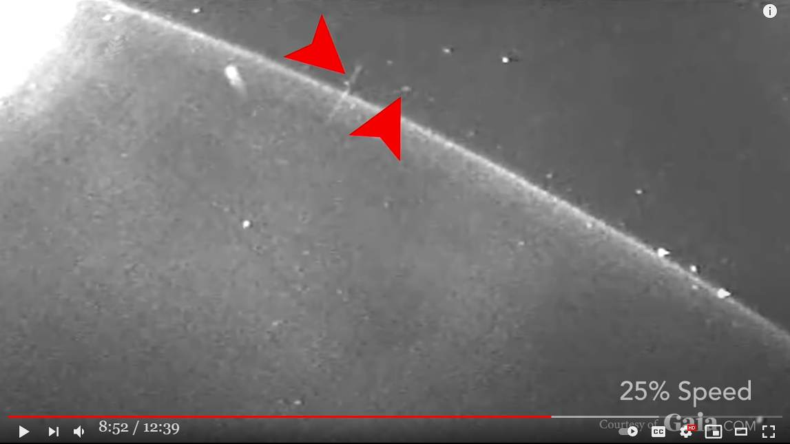
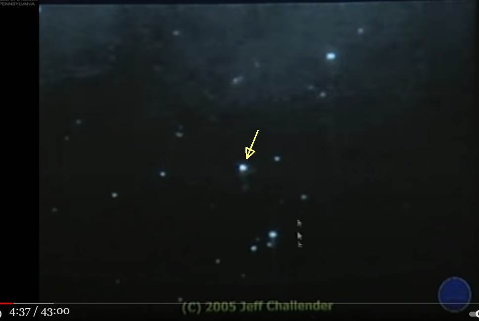
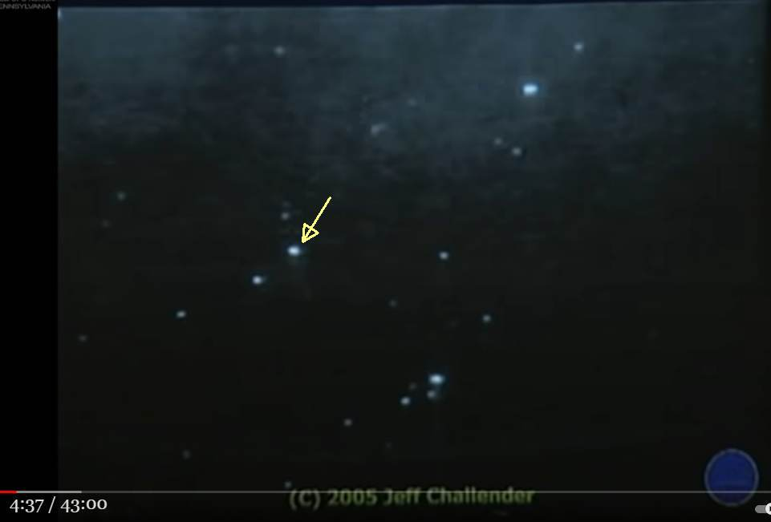
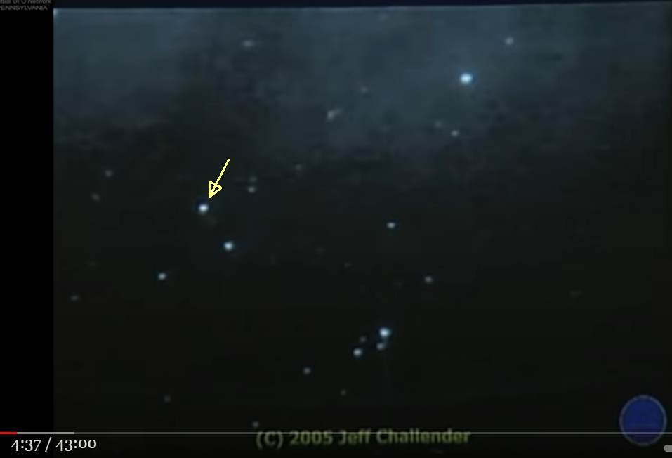
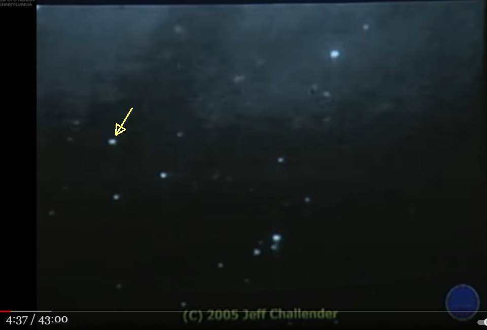
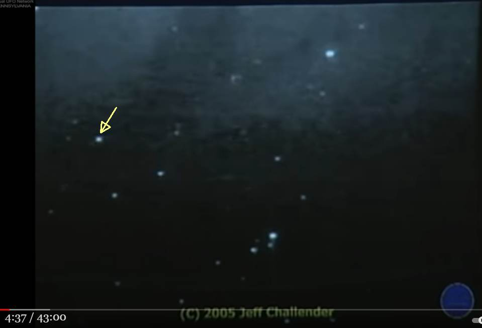
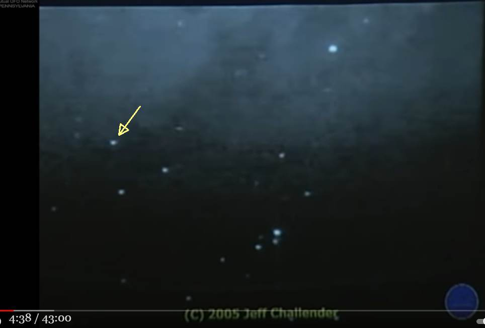
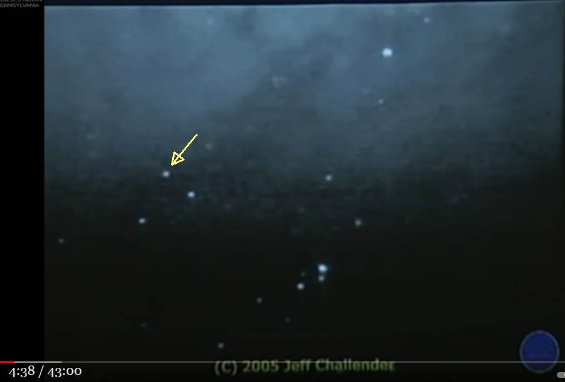
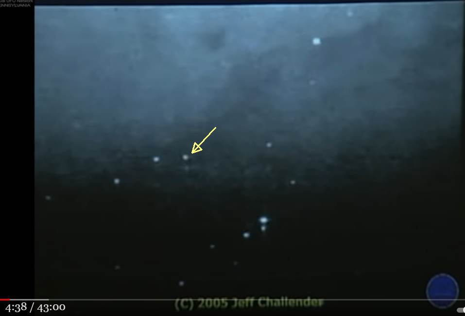
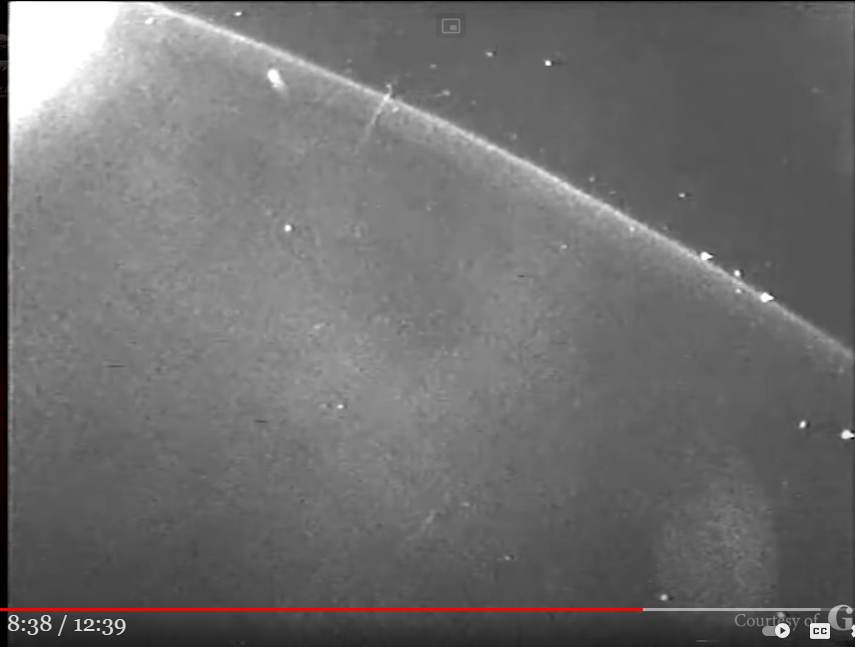

Richard Dolan : SSP が実在する有力な証拠の一つがコレだ → その正体はたぶん… （＋追加）
 
履歴
(2021-07-19) コメントで言及したシーンの動画を見かけたので追加。 (2021-05-23) 作成前置き
・Richard Dolan は "breakway civilazation"（=SSP) の存在を堅く信じており、講演でも毎回、それを主張している。 ・以下の講演動画では、彼がその「有力な証拠」の一つだとしている動画映像を語っている。手抜き
・衛星から撮影した映像に奇妙な挙動を示す物体が写り込んでいる。 ・2005, Jeff Challender（故人） が見つけたシーン。この物体は画面右から左へ移動し、途中で U ターンして戻っている。 ・この軌道を反転させた物体は "breakway civilazation"（=SSP) の存在を示す証拠のひとつだ。切り出し静止画
時系列で並べると…       音声書写（自動生成）
展開
there's another reason that i think we 03:40 have a secret space program 03:42 there are lots and lots of recorded 03:45 strange 03:46 happenings in earth orbit many 03:49 what are these things jeff challenger uh 03:53 is no longer alive unfortunately he was 03:56 a guy who was absolutely dedicated to uh 03:59 getting copies of nasa space missions 04:02 and then studying them fanatically 04:07 uh jeff jeff was physically disabled i 04:09 mean he really couldn't get out easily 04:11 so this is what he did 04:12 and he spent his entire day after day 04:16 uh going through these and just looking 04:18 for things and 04:20 and to his credit he was a very 04:21 level-headed person if he and he doesn't 04:23 just say everything's a ufo 04:25 he was a very clear-headed person in my 04:28 own view 04:29 but there are a lot of things that he 04:30 noticed on the various space missions 04:32 that are 04:33 very difficult to explain such as this 04:35 next thing that i'm going to show you 04:37 this is a repeating clip so just keep 04:39 watching it's been speeded up 04:41 also okay so in actuality this clip is 04:45 more than two minutes but he's got it so 04:48 that it's like two seconds and you see 04:49 an object doing what appears to be a 04:51 u-turn 04:52 in space i'm going to show you an 04:54 enhancement of it in just a moment 04:56 let's do the enhancement so that there's 04:59 an image stabilization going on and you 05:00 can see it actually 05:02 seeming to maneuver 05:06 now this is in earth orbit during a nasa 05:08 mission from 2005. 05:11 what do they represent well here's one 05:12 thing i would say 05:14 maybe we made those things maybe we 05:16 didn't make those things now if we 05:17 didn't make those 05:18 things i would still say that's probably 05:21 good evidence for a secret space program 05:23 because after all 05:24 if someone's making things that are 05:26 doing that in space 05:28 certainly there would be more than 05:29 enough motivation to have a secret space 05:31 program to go out there 05:33 and to deal with it or investigate it 05:36 obviously and of course if 05:38 well if we made those things and that's 05:40 de facto proof of the secret space 05:41 program 05:43 so there are strange enough things 05:45 happening that i think would warrant it 05:47 there's so much more a breakaway 05:51 civilization講演動画（43:00）
Richard Dolan - The Implications of Advanced Flying Crafts of Unknown Originコメント1
・Richard Dolan は、この U ターンした物体が "breakway civilazation"（=SSP) に所属する地球製の革新的技術を採用した宇宙船だと主張している。 ・この動画を撮影した NASA がこの件について何らかのコメントを公表しているかどうかを Richard Dolan が語っていないので不明。 ・だが、NASA の説明なしでもこの U ターンした物体の正体を推定できる。この物体はこの動画を撮影した衛星の周囲を取り巻く微細なゴミや水滴、廃棄物で、それをカメラがとらえたのだろう。 ・Richard Dolan は、この物体が軌道を変え U ターンしたことを重大視し、SSP の宇宙船説に飛びついているが、U ターンは静電気で説明が可能。 ・太陽風（プラズマ）が降り注ぐために衛星は帯電する。アンテナや太陽電池パネル、姿勢制御モータという突起があるため、衛星の周囲は空間的にも時間的にも極めて急峻かつ複雑に変化する電界分布となっていることが予想できる。 ・その衛生周囲を取り巻く微細なゴミや水滴は衛星の周囲の電界によって F = qE の力を受ける。衛星周囲の急激な電界分布の変化によって微細なゴミが U ターンすることも当然、起こりうる。コメント2
・同じような宇宙船から撮影した動画シーンを思い出した。Youtube に up されていたもので、昔の TV の UFO 特番などで放映されたものがソースらしかった。 ・うろ覚えだが、その動画シーンはこんな感じ。 ・画面の右上から左へ移動する光点 a が写っていた。突然、その光点が U ターンして引き返した。 ・その直後、画面の左下から右上へ素早く直線上に光点 b が通り過ぎた。 ・あたかも a は b の攻撃を予想して回避したかのようにも見えた。 ・たぶん、その動画シーンも衛星周囲の静電界の急激な変化で説明がつくはず。a も b も衛星の突起部分からの放電によって電界分布が急変し、軌道を変えただけだと思える。 ・以上の説明は凡庸で謎解きと言えるほどのものではない。なので 80%ルールは適用しなかった。 (2021-05-23)
(2021-07-19 begin)前置き
・上のコメントで言及した・同じような宇宙船から撮影した動画シーンを思い出した。Youtube に up されていたもので、昔の TV の UFO 特番などで放映されたものがソースらしかった。の動画シーンを見かけたので追加しておく。該当箇所
・8:10-- 動画（12:39）
E.T Base at Aristarchus Crater, Transient Lunar Phenomena Mysteries, and Alien Cover Up! (2021-07-19 end)
初出
Richard Dolan : SSP が実在する有力な証拠の一つがコレだ → その正体はたぶん… （＋追加） (2021-07-19)
Postscript (2022-08-23)
- Richard Dolan は 「Gary McKinnon が Solar warden に関する NASA の機密資料を盗み見た」と長らく信じていた。Richard Dolan が Gary McKinnon 本人を招いてインタビューしたところ、 Gary McKinnon 本人がそれをきっぱりと否定した。その経緯を下の過去記事で取り上げた。
・10:45 Q) あなたは極秘宇宙艦隊（"solar warden"）の資料を発見したんだよね？ A) No!、それはデマだ（キッパリと断言）。 （予想外の返事に Richard Dolan が驚愕） ・11:30 実際は、Excel 文書を発見した。"non-terrestrial officer" の欄があったが、それは"ET" の事ではない。"non-terrestrial officer" は（地球上ではなく）地球外（の衛星など）に居住することを意味するのかも。 ・12:30 今、どう考えているか？ ・たぶん、地球外（の場所で勤務する）人間の兵士のことだろう。 ・13:05 火星などの秘密基地で勤務する人間のことだろう。海軍あたりだと思う。動画（54:58）
・"PERFECTLY SMOOTH SHELL OF A CRAFT." GARY MCKINNON 1ST INTERVIEW IN YEARS. Richard Dolan Show. ref: Gary McKinnon : 私が NASA の宇宙艦隊の資料を発見したという話はデマだ。（途中：その1） (2019-03-14)
関連の過去記事
Gary McKinnon : NASA のコンピュータに侵入した手口は単純。 (2019-03-15)